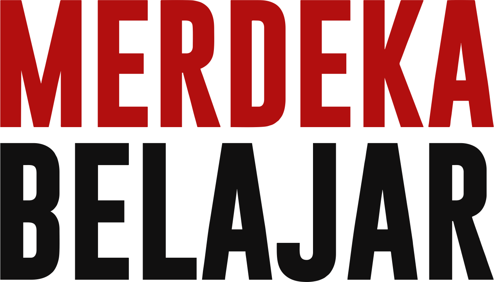

Sejarah Singkat Aksara Jawa
Aksara Jawa atau Hanacaraka adalah huruf tradisional untuk menulis bahasa Jawa. Aksara ini berkembang dari aksara Kawi, yang berakar dari aksara Brahmi dari India. Dahulu aksara Jawa dipakai untuk menulis naskah, surat, dan tembang di keraton. Sekarang kita masih bisa melihatnya di papan nama jalan, gapura, dan buku pelajaran.
Menurut cerita rakyat, aksara Jawa berasal dari kisah Aji Saka dan dua abdinya yang setia, Dora dan Sembada. Kisah mereka diabadikan menjadi urutan 20 aksara: ha na ca ra ka.
Mengenal Aksara Jawa
Aksara Jawa ditulis dari kiri ke kanan. Setiap aksara dasar dibaca dengan bunyi vokal a, misalnya ꦏ dibaca ka. Di kelas IV, kita belajar dua bagian:
20 aksara dasar, dari ha sampai nga.
Tanda yang mengubah bunyi aksara, seperti wulu (i) dan suku (u).
Arti urutan Hanacaraka

Tombol Navigasi
Menu Utama
{{ pageTitle }}
Aksara ke-{{ det.n }} dari 20 · dibaca "{{ det.l }}"
Yakin ingin keluar dari Evaluasi?
Jawabanmu belum selesai dan tidak akan disimpan.